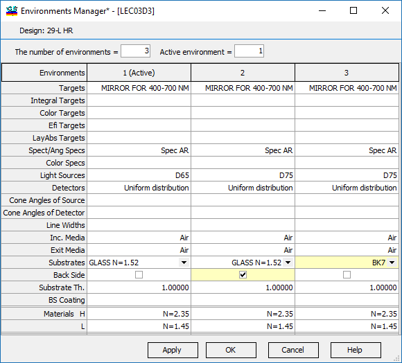
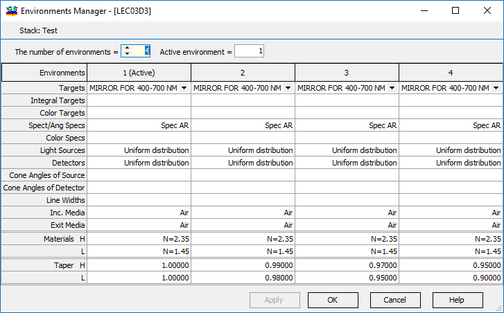

Environment Manager
Environment Manager
Navigation: OptiLayer Menu Commands > Data Menu >
Environment Manager
` <idh_back_side_options.html>`__ ` <idh_menu_data.html>`__ ` <taper_function.html>`__
The Environment Manager can be used as an alternative to the Load command for corresponding databases.
Multiple environments can be defined with the help of the “Number of Environments” entry field. In this case, all synthesis procedures will automatically take into account all valid environments. The active environment is the environment for which all graphics windows are displaying corresponding data. The active environment can be easily changed with the corresponding entry field or by clicking on the “Environments” caption in the spreadsheet.

For each environment, it is possible to define different Targets, Integral Targets, Color Targets, Efi Targets, Light Sources, Detectors, Incident Media, Exit Media, Substrates, the state of the Back Side, Substrate Thickness, and the presence of Back Side coating. It is also possible to define different materials for the same index abbreviation. The last option can be useful for investigating coatings with materials depending on some external factor. Modified and not applied cells are displayed in yellow. Each entry can be selected from drop-down lists containing items from the corresponding database.
During synthesis, the resulting merit function value is determined by the formula:
(MFtotal)2 = 1/NEnv * (MF12 + MF22 + … + MFNEnv2)
In this formula, summation is performed only by valid environments, i.e., environments that have a defined merit function value. Such environments should have the Substrate and Incident Medium loaded, and at least one of the targets should also be loaded. Environments can also be used with Stack objects.

In this case, Layer Absorptance targets and EFi Targets are not available since they are not defined for Stack objects. Also, the Substrate is missing because for stacks, it is necessary to define only the Incident and Exit media.